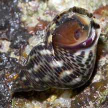
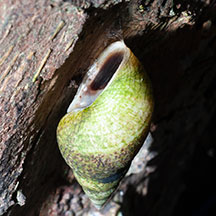
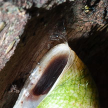

|
|
| shelled snails text index | photo index |
| Phylum Mollusca > Class Gastropoda |
| Periwinkles Family Littorinidae updated Aug 2020
Where seen? Periwinkles sprinkle the rocks on many of our shores. They appear dead but are very much alive. At low tide, they are usually wedged into crevices and cracks in rocks and even inside the empty shells of dead oysters and barnacles. Small but resilient snails, periwinkles can breathe air so they are among the most common snails seen on the rocks above the high tide line. Large groups of periwinkles often form a horizontal band on the rocks as they move with the tides. Some larger periwinkles are found on mangrove trees, clinging on to roots, trunk and even leaves. Among the hardiest of these must be the tiny Knobbly periwinkles. Features: 2-5cm. Shell thin, various shapes from conical with a sharp spire to squat or even round with flatter spire. Operculum thin, circular, made of a horn-like material. Some very similar species are difficult to positively identify without close examination. On this website, they are grouped by external features for convenience of display. |
 Several kinds of periwinkles may be found together. Chek Jawa, Aug 05 |
 Like other snails, they have a broad foot and tentacles. Chek Jawa, May 05 |
 A thin operculum. Labrador, May 05 |
| Surviving the low tide: At low
tide, periwinkles attach the lip of the shell to the surface with
mucus then seal the shell opening tightly with a thin, horny operculum.
Don't pick periwinkles off a rock or a mangrove tree! Left unattached, they may wash
away when the tide comes in and they will die. What do they eat? Periwinkles graze on tiny algae growing as a film over the rocks. Some species even eat algae growing within the rock, and rasp off some rock as they graze! Periwinkle Babies: In periwinkles, the genders are separate and they practice internal fertilisation. The males have a prong-like male organ. Some females shed their eggs directly into the water where these drift with the plankton as they develop. Others lay gelatinous egg masses or retain their eggs until these hatch. Free-swimming larvae hatch from the eggs, only later developing into snails. |
 Kranji, Mar 13 |
 Mucus strands used to stick onto a tree. |
| Human uses: In our region, they are collected for subsistence food by coastal dwellers and for shellcraft. Large periwinkles are eaten in temperate countries such as England. In fact, the name 'periwinkle' comes from the Old English for 'penny winkle' as they were then sold for a penny per handful. They were also used as jewellery. Status and threats: None of our Periwinkles are listed among the threatened animals of Singapore. However, like other creatures of the intertidal zone, the rest of our Periwinkles are affected by human activities such as reclamation and pollution. Trampling by careless visitors and overcollection can also have an impact on local populations. |
| Some Periwinkle snails on Singapore shores |

| Family
Littorinidae recorded for Singapore from Tan Siong Kiat and Henrietta P. M. Woo, 2010 Preliminary Checklist of The Molluscs of Singapore.
|
Links
References
|